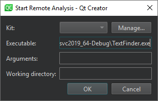

Running Valgrind Tools on External Applications
Qt Creator integrates Valgrind code analysis tools for detecting memory leaks and profiling function execution.
To run the Valgrind tools to analyze external applications for which you do not have a Qt Creator project:
- Select Analyze > Valgrind Memory Analyzer (External Application) or Valgrind Function Profiler (External Application).

- Specify the application to run and analyze, and the kit to use.